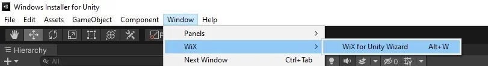
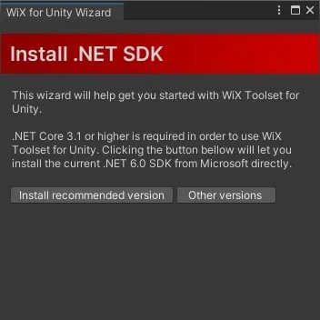
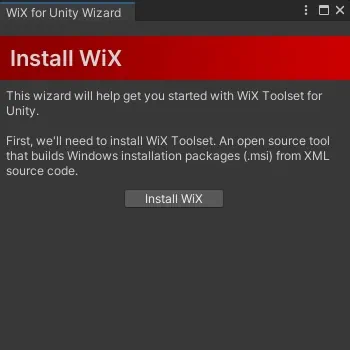
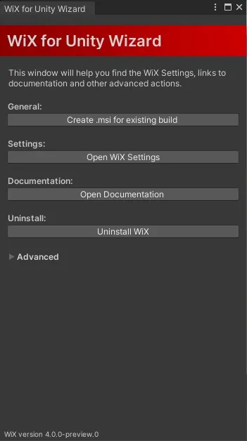

Initial Setup
This document will aid you in setting up Windows Installer for Unity for the first time, but you can also just follow the steps in the WiX for Unity Wizard, which will guide you through the necessary steps.
To open the wizard go to Window -> WiX -> Wix for Unity Wizard or alternatively, use the keyboard shortcut Alt + W.

When you've imported the package for the first time, it is necessary to install WiX. WiX is an open source framework that builds Windows installation packages (.msi) from XML source code. It is installed as a .NET Tool, which is why having .NET 3.1 or higher is one of the system requirements.
1. Installing the .NET SDK
In the wizard, select 'Install Recommended Version' and download the newest version of the .NET SDK. At the time of this writing, the recommended version is .NET 6.0
This step is only necessary, if you don't already have a suitable version of .NET SDK installed.

Note
In case the wizard does not advance to the next step after installing the .NET SDK, or you are getting an error that 'wix' is not recognized as an internal or external command at a later point, please try restarting your machine.
2. Installing WiX
Next, hit the 'Install WiX' button and WiX will be installed in the background.

3. Profit
That's it. After these steps you've successfully installed WiX and are good to go. The main screen of the wizard should look something like this:

In the next chapter we'll go through the steps to create an installer for your project.